Learning Objectives
After completing this lesson, you’ll be able to:
- Connect to a data source.
- Define a feature type.
- Identify feature types in your workspace.
- Distinguish feature types from readers and writers.
- View your existing data.

Learning content in the FME Academy presents a user's story addressing their data integration challenges with FME. You should follow along with their actions using your installation of FME (2026.1 or later) or request an on-demand virtual machine in the footer link below. Some lessons will require you to follow their steps or take additional steps to answer a quiz question.
A Resources section will provide links to interactive tutorials and starting workspaces when necessary.
Instructions
In this lesson, you will:
- Scroll down to read the text below.
- Complete the exercise by following the steps.
- Complete the Quiz toward the bottom of the page.
- Optional: Let us know if you found this lesson relevant to your role by filling out the survey at the bottom of the page.
- Click 'Next' to mark the lesson complete.
Terminology
Reader
A workspace component that enables you to read a particular dataset.
Writer
A workspace component that enables you to write a particular dataset. Writers can create new datasets or append/edit existing ones.
Feature Type
A feature type in FME corresponds to a single sheet in a spreadsheet, table in a database, or a single layer (geometry plus attributes) in spatial data. Feature types are children of readers or writers, so we refer to them as reader feature types or writer feature types.
Learn More
Feature / Record
Feature types contain features. For spreadsheet or database data, a feature corresponds to a single row. For spatial data, it corresponds to a single piece of geometry (point, line, polygon, etc.) and its attributes.
Starting with FME 2026.1, we are updating the language in FME to refer to records instead of features. Record is a more general term and makes more sense given that not all data used in FME is spatial.
Attribute
FME features have attributes that hold information about the feature. These are like columns in a table or spreadsheet or attributes in the ArcGIS Pro attribute table.
Resources
- BusinessOwners.xlsx
- For Safe Software-hosted training courses, you can find this on your virtual machine here:
- C:\FMEData\Data\Planning\BusinessOwners.xlsx
- PublicArt.xlsx
- C:\FMEData\Data\Culture\PublicArt.xlsx
- Complete workspace
- C:\FMEData\Workspaces\IntegrateDataWithTheFMEPlatform\connect-and-view-data-complete.fmw
Starting an FME Project

Sven works as a Planning Analyst for a city’s economic development department. He has been given an Excel spreadsheet containing the point locations of businesses and needs to load it into an Esri geodatabase. He will use this business data to create guides for each city neighborhood to provide to residents, prospective business owners, and tourists.
Starting Data
Sven is starting with an Excel workbook (BusinessOwners.xlsx) with a single sheet. Each row is a separate business and contains information about the business, including the owner's name, the company name, the business license number, and the business’s primary address. He wants to keep all this information in his new geodatabase. Here are two sample rows of his data.
|
First
|
Last Name
|
Company
|
License Number
|
Longitude
|
Latitude
|
|
Elvis
|
Clay
|
Diam Industries
|
B347A2
|
-123.101472
|
49.2480941
|
|
Noelani
|
Curry
|
Mus Donec Associates
|
1991FF
|
-123.1318356
|
49.28042851
|
1) Create a Workspace
- Start FME Workbench (2026.1 or later).
- Click New to create a new workspace in FME.
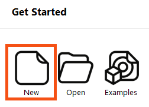
Most FME Academy courses assume you can access FME Form and FME Flow. You should follow along with their actions using your installation of FME (2026.1 or later) or request an on-demand virtual machine. Some lessons contain an additional exercise that challenges you to take additional steps independently.
If you need access to FME, you can:
If you don’t have access to FME, some courses provide step-by-step tutorials you can follow to see the workflow in action. However, some Quizzes will require FME access to answer the questions.
2) Interface Overview
- Take a moment to review the Workbench user interface.
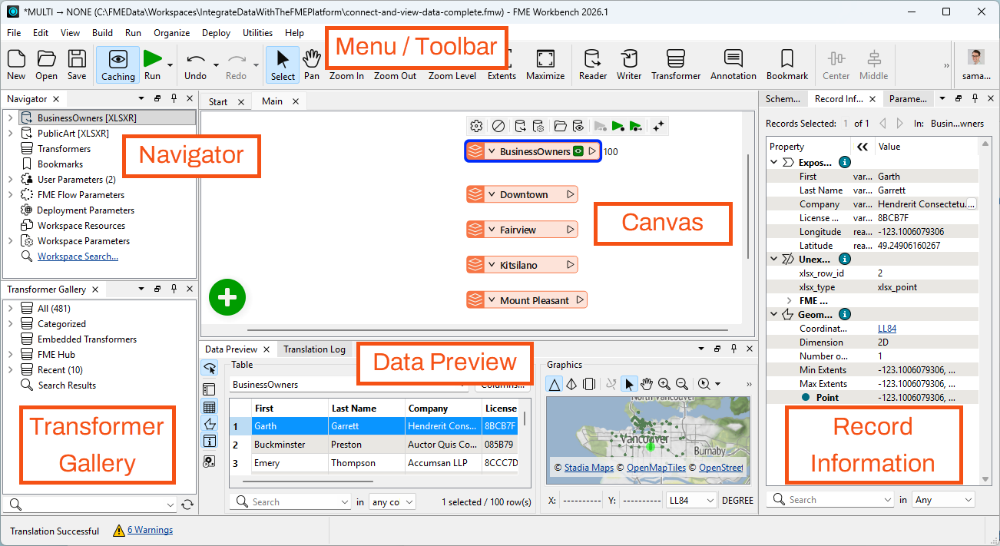
- The menu/toolbar lets you access common actions.
- The Navigator is an outline view of your workspace that lists readers and writers.
- The Canvas is where you can use a visual drag-and-drop system to build your data integration workflow.
- The Transformer Gallery is a list of all the tools called transformers you can add to the Canvas to process your data.
- The Data Preview window shows tabular and map views of your data.
- The Record Information Window shows all the information FME knows about a single feature.
- You can toggle these windows on and off, or reset them to the default, under View > Windows.
3) Add a Reader
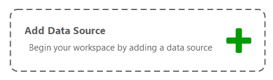
- Click the canvas once to ensure it is focused.
- Click Add Data Source or type “Excel”.
- When you start typing, the Quick Add dialog appears and suggests objects that match “Excel.” It lists all objects you can add to the canvas: transformers, readers, and writers.
- Double-click the Microsoft Excel reader or press the Enter key.
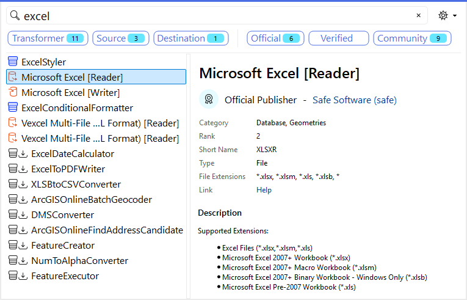
- The Add Reader dialog appears.
- The Format is already set as Excel, but you still need to set the other parameters.
- Set the Dataset parameter to the location of the Excel file, either a URL (https://s3.amazonaws.com/FMEData/FMEData/Data/Planning/BusinessOwners.xlsx) or a local path (for Safe Software-hosted training courses: C:\FMEData\Data\Planning\BusinessOwners.xlsx).
- The Dataset parameter can accept one or more paths to files stored on your computer, URLs, or a connection to a web service (by clicking the downward-pointing arrow and then Select File From Web).
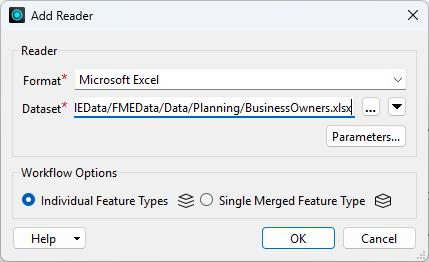
4) Set Reader Parameters
- Then click the Parameters… button.
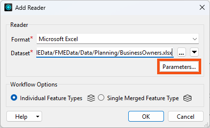
The Microsoft Excel Parameters dialog controls how the Excel file will be read, including which sheet(s) to read. The Preview section displays how FME sees the data, while the Attributes section displays the attributes (spreadsheet columns, in this case) that FME detected. FME automatically detected the Longitude and Latitude attributes as X and Y coordinates and set them appropriately (under the Type column). You can also manually set these, if necessary. FME will automatically create points using these attributes when it reads the spreadsheet.
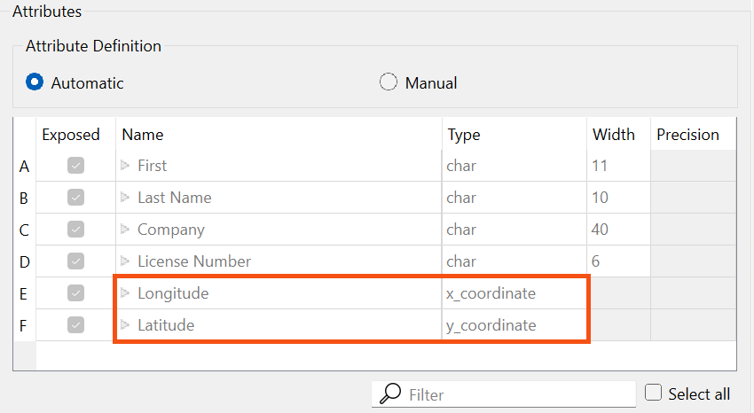
Some datasets store geometry information, and some do not. In this case, the source Excel file contained spatial data (latitude and longitude coordinates) describing the location of the address associated with each business license. However, in Excel, these coordinates are stored as numbers. The dataset needs to store geometry separate from its attributes to create a spatial dataset that can be analyzed and manipulated using FME or a GIS.
The Attribute Definition looks correct; FME will use the Longitude and Latitude attributes to automatically create points. However, for these points to appear correctly on a map, FME needs to know which coordinate system they are using. If you were reading from a spatial format like an Esri Shapefile, FME could read the coordinate system information directly. But Excel doesn't store that information, so you need to tell FME which coordinate system to use.
- Scroll down to the Spatial section and find the Coordinate System parameter.
- The Coordinate System parameter currently says “Unknown,” so you need to set it.
- Setting the coordinate system is not mandatory. It is necessary to set the coordinate system to use background maps when inspecting the data, comparing the data to other datasets in different coordinate systems, or writing to formats requiring a coordinate system.
- FME will use the coordinate system stored by the dataset if it exists. The Coordinate System parameter will display “Read from source” if the dataset can store coordinate system information and “Unknown” if not. If you are unsure of the coordinate system of your data, check the metadata or contact the creator of the dataset.
- Set the Coordinate System to “LL84”, a commonly used global coordinate system.
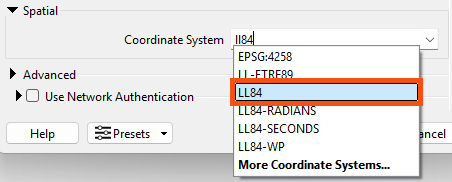
- Now that all required parameters are set, click OK twice to close the dialogs and add the reader to the canvas.
- The canvas now shows the single worksheet from the Excel spreadsheet, "BusinessOwners". This object is known as a reader feature type.
5) Understand Workspace Structure
Here is a visual example of how FME components relate to Excel components. In the image below:
- The dataset is the XLS or XLSX file (a.k.a. the workbook)
- The feature types are the sheets (a.k.a. tables)
- The features are the rows (the columns are the attributes)
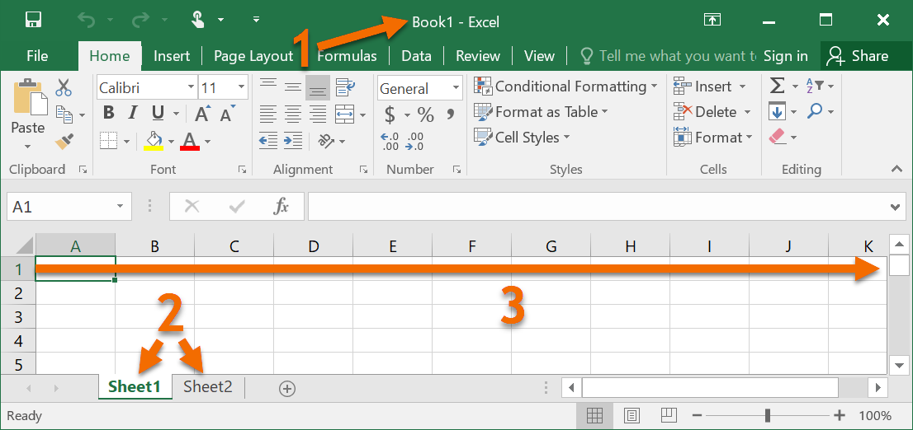
The components of a workspace are represented in FME Workbench as follows. In the image below:
- The entire workspace consisting of the contents of the canvas and the Navigator.
- Readers (a) and writers (b) at the top of the Navigator.
- Reader (a) and writer (b) feature types, shown on the canvas and under their respective reader and writer in the Navigator.
- Features (rows in a table or single pieces of geometry with associated attributes) are shown as feature counts on connection lines after a workspace is run.
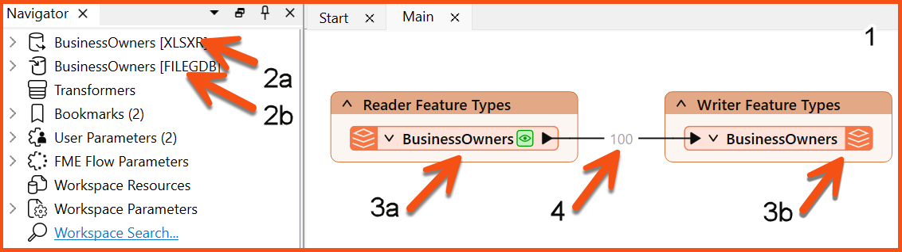
The total hierarchy of components in FME Workbench looks like this:
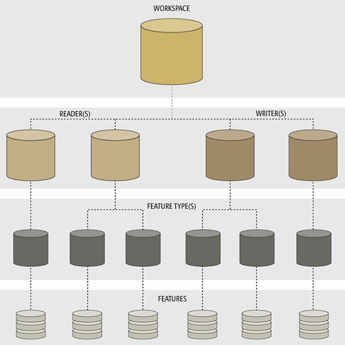
6) Save Your Workspace
- Save the workspace by clicking the Save button in the toolbar (the row of icons below the menu bar):
- FME Workbench saves files called workspaces. They have the file ending .fmw and tend to be relatively small, as they do not contain data from readers and writers. Instead, they contain references to where that data is located, e.g., a file path, URL, or FME Web or Database Connection.
- You can save your workspace wherever you like. We recommend that you save often, including every time before you run your workspace.
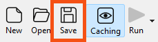
7) Run the Workspace
- Click Run on the toolbar to run the translation.
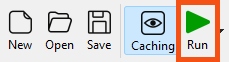
A Translation Parameter Values dialog appears to confirm some parameters. This dialog can be helpful if you want to change parameters before he runs his workspace.
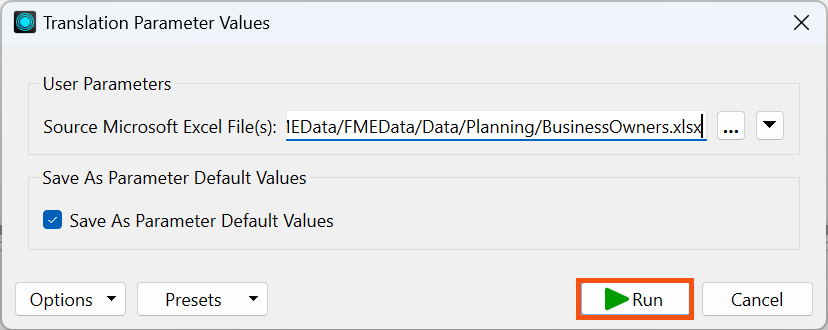
Being prompted to fill in the parameter values lets you rerun a workspace with different parameters. For example, you may convert several datasets using the same workspace running multiple times or testing if a workspace runs successfully with different input data. You may disable this prompt by clicking the drop-down triangle beside Run in the toolbar and deselecting Prompt for User Parameters.
After the workspace runs and the data is read, the Translation Log reports what FME did during the translation and whether the translation was successful. It's likely the Translation Log will only show for a moment; step 8 explains why.
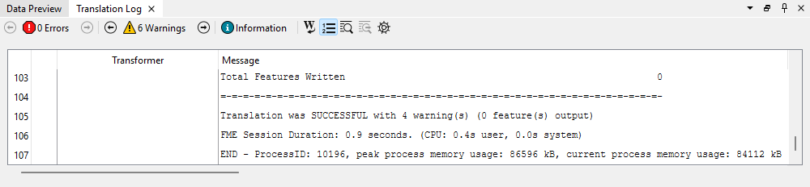
The Translation Log is displayed as a sortable table. You can click the hyperlinked transformer name to navigate to the element on the canvas producing the message. This ability to identify where errors are occurring makes debugging workspaces more efficient.
8) View Your Data
On the BusinessOwners feature type, the new green icon represents a local copy of all the spreadsheet's features. It is called a feature cache, and you can click it to inspect the data. Caches store all the features from a particular port, represented by the green magnifying glass icon.
- Click on the green magnifying glass icon on the BusinessOwners feature type to inspect the cached data.
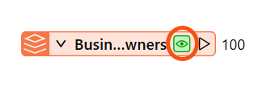
Data Preview displays the contents of the cache: a table containing all of the spreadsheet data. The total number of rows (features) is shown in the bottom right of Table View. Graphics View displays the spatial data, which, in this case, are points. If you had the BusinessOwners feature cache selected, Data Preview will show the data as soon as the workspace finishes running, which explains why you may have only seen the Translation Log briefly.
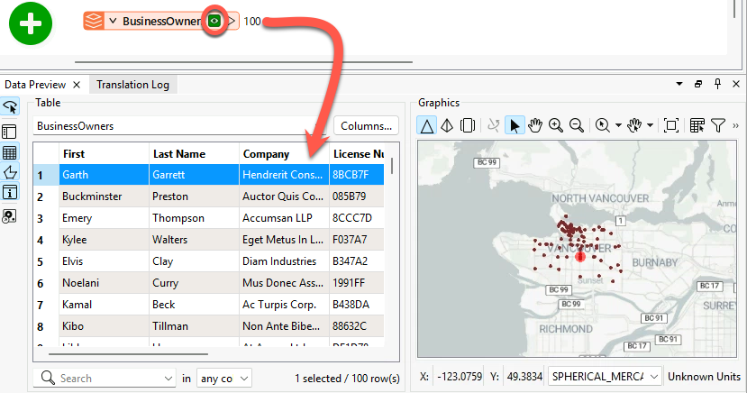
If you are taking a Safe Software-hosted training course, we have the background map enabled by default. If you don't see a background map, we'll show you how to configure one in a later lesson.
Data Preview is an embedded version of a standalone program included with FME Form, the FME Data Inspector. You can use this separate program if you prefer to have a full-screen application when inspecting data. The FME Data Inspector can view any format that FME can read.
9) Add Another Excel Reader
Sven also wants to include data about public art in his neighborhood guides.
Help him by adding another Excel reader to connect to all the sheets (feature types) in this public art Excel workbook (C:\FMEData\Data\Culture\PublicArt.xlsx). The steps are the same; use the new URL, and don't forget to set the Coordinate System to LL84 again. You don’t need to download the file; you can paste the URL into the Dataset parameter of the Add Reader dialog.
The workbook contains one sheet per neighborhood. When prompted, add all the feature types. Each row is a public art installation and contains information about the location, the piece's title, and its longitude and latitude. Your canvas should now look like the image below.
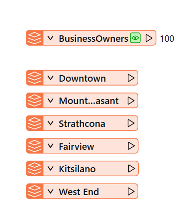
Leave Us Feedback on This Lesson